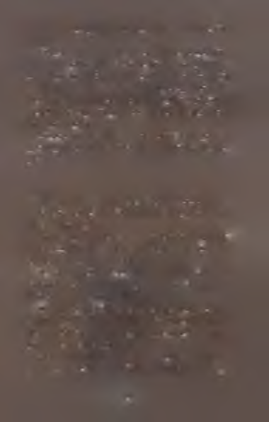

nin bir yolu yoktu. Boru, Fakülte’nin kullanılmayan bir
e
â
kısmına çıkıyor olabilirdi. Orada yıllarca kuru kalsa bile
s .
5
5
,
J »
kimsenin ruhu duymazdı.
Ş.
£
s
Ama belki de Hocalar Salonuna çıkıyordu ve şu anda
Sr
'2 3
*
=2
içlerinden biri banyo yapıyordu. Ya Kröze’ye çıkıyorsa ve
r
**
sakin sakin oksitlenmeye bırakılmış bir deney kasıtsız
r-
bir ekzotermik değişimden geçiyorsa?
3
s-
Her ikisinde de sonuç aynıydı. Kargaşa. Anahtarlar
Ü
ü -
t-
bulup çıkaran, kapıları açan insanlar. Auri’nin Şeyaltı’nda
E
J j
m
gezinen, münasebetsiz ışıklarını oraya buraya tutan ya
-*
e
%
bancılar. Yanlarında getirdikleri dumanları salan yaban
:r
cılar. Anırırcasma sesler çıkaran. Her yere inip kalkan
r
- 3
i r
*
sert, umursamaz çizmeleri. Bir bakışın nelere yol açtığını
1
1
r
hiç düşünmeden her yere atılan bakışlar. Neyin uygun
f
' i
olup neyin olmadığını zerre kadar bilmeden onu bunu
£ '
2
kurcalamalar.
as
er
Auri parmak eklemleri bembeyaz kesilecek kadar
~ a
r
...rr
yumruklarını sıktığını fark etti. Şöyle bir silkinip ayağa
t
i
£
kalktı. Saçları başının etrafında ıslakça sarkmaktaydı.
1
1-
I
Hava artık daha açıktı. Nemli ve buharlı değildi. Alet
|
lerini toplayan genç kız buhar borusunun nihayet hem
-■ j1
kendini hem de etrafındaki her şeyi ısıtarak kurutmuş
i
olduğunu görüp sevindi. Daha da iyisi, sessiz şeylerin
r | f
aheste ilgisi havadaki rutubeti geçirmişti.
i
t
m. -fl
Genç kız Foxen’ı siyah demir boruya yaklaştırdı ve sorunun, saç teli inceliğindeki bir çatlaktan daha büyük olmadığını görünce rahatladı. Boru kuru gözükmesine rağmen Auri onu mendiliyle sildi. Bir kez daha sildi. Sonra şişenin
ağzını açtı, fırçasını içine batırdı ve berrak sıvıyı ince çatlağa
yaydı.
Keskin koku karşısında burnunu kıvıran Auri fırçayı
şişeye tekrar batırarak borunun etrafını bir güzel sıvadı.
Sırıtarak şişeyi süzdü. Ne kadar güzeldi. Tenakulum alengirli bir maddeydi ama bu mükemmeldi. Ne reçel kadar koyu, ne de su kadar seyrekti. Sürüldüğü yere yapışır ve
yayılırdı. İçi yeşil çimlerle, sıçramalarla ve... sülfonyumla
mı doluydu? Yoksa naftayla mı? Auri aslında böyle bir şey
kullanmaya yanaşmazdı ama sonuçları görmezden gelinemezdi. Yapımındaki maharet reddedilemezdi.
Fazla geçmeden çatlağın etrafını ışıltılı sıvıyla çepe
çevre kaplamıştı. Auri dudaklarını yaladı, başını kaldırdı,
sonra da ağzını oynatıp ıslaklığın uzak kenarına özenle
lükürdü. Tenakulumun yüzeyi dalgalandı ve genç kızın
sırıtışı daha da genişledi. Auri bir parmağını uzatıp dokunduğunda, maddenin sert ve cam kadar pürüzsüz oldu
ğunu keşfederek memnun oldu. İşte bu. Bunu karıştıran
ve etkinleştiren her kimse simyanın bir sanat olduğunun
canlı kanıtıydı. Zanaat üzerinde katıksız bir ustalığın göstergesiydi.
Auri maddeden iki kat daha sürerek incecik çatlağın bir
karışlık mesafesine kadar borunun etrafını tamamen sıvadı. Onu sabitlemek ve sırlamak için iki kere daha tükürdü.
Sonra ağzını tıkadığı şişeyi öptü, gülümsedi ve suyu açmak için geldiği yere koştu.
62
İşi biten genç kız fırçanın bakımını yaptı ve
Sakiniye’ye döndü. Orada kulağım kapıya
dayadı. Dinledi. Hafif bir... hayır. Hiçbir şey duymadı. Nefesini tutup
kulak kesildi. Hiç.
m
-
Buna
rağmen
kapıyı yavaşça açtı.
İçeri baktığında di
ğer kapının etrafından
r
sızan bir ışıkla karşılaşmadı. Yerde yeni çizme
izleri gördüğünü sanınca kalbi bir anlı
ğına tekledi.
Fakat hayır. Sadece gölge.
Sadece kendi nefes kesen korkusu.
t e
Auri şişeyi dikkatle rafına, onu almış olduğu
kendi koyu renkli tozsuz halkasının
üstüne geri koydu. Sonra
fırçayı da.
Çizmelerin kocaman, siyah, hoyratça izlerine dikkatle basarak ilerledi. O ortalığı karıştıracak türde biri değildi. Suyun yumuşak bir dalga ile birlikte akmasına benzer hafiflikte
yürürdü. Hareketi ne olursa olsun su asla değişmezdi. Bir
işi yapmanın uygun yolu buydu.
Genç kız kalın kapıyı yavaşça arkasından kapattı. Kesinlikle emin olmak için kapı kolunu kontrol etti. Şeyaltı’na tekrar adım attığı zaman ayaklarının altındaki taşlar hoş bir
etki yaratmalıydı. Ama yaratmıyorlardı. Onlar altı üstü birer taştı. Hava sanki gergin ve tuhaftı. Bir terslik vardı.
Auri durdu ve kapıyı tekrar dinledi. Daha dikkatli kulak
kabarttı, sonra da içeri bakmak için onu azıcık araladı. Hiç.
Kapıyı örtüp kapı kolunu kontrol etti. Ağırlığını tahtaya verip iç geçirmeye çalıştı ama göğsünde bunu yapacak kadar nefes bulamadı. Bir terslik vardı. Bir şey unutmuştu.
Kalbi gümbür gümbür atan genç kız Bellik’e geri koşarken yanlış yola saptı. Sonra tekrar. Fakat sonunda vanayı yeniden buldu. Onu kapatmayıp açtığından kesinlikle emin
olmak için dizleri üstüne çöktü. İki elini birden boruya dayayarak içinde akan suyun titreşimini hissetti.
Öyleyse unuttuğu şey bu da değildi. Acaba yeterince
dikkatli hareket etmiş miydi? Zeminde bir leke bırakmış
mıydı? Sakiniye’ye kadar hızla koşup kulağını kapıya dayadı. Ses yoktu. Kapıyı açıp Foxen’ı havaya kaldırdı ki ışığı tozlara vursun. Her şey aynıydı.
Artık cildi terden ışıl ışıldı. Genç kız ağır kapıyı örttü.
Kapı kolunu kontrol ettikten sonra varlığıyla yokluğu bir
olan ağırlığını ona dayayarak ellerini ve alnını tahtaya bastırdı. Daha derin solumaya çalıştı ama kalbi göğsünde sıkışıp kalmıştı. Havada bir terslik vardı. Kapı, çerçevesine dört dörtlük oturmayı reddediyordu. Auri iki avucuyla birden ona tekrar bastırdı. Kapı kolunu kontrol etti. Foxen’m 64
ışığı ansızın çok yetersiz göründü gözüne. Auri yeterince
dikkatli hareket etmiş miydi? Hayır. Farkındaydı. Dinledi,
sonra kapıyı açıp yeniden baktı. Bir şey görmedi. Fakat görmemenin faydası olmadı. Auri görünüşün her şey demek olmadığını biliyordu. Bir terslik vardı. Genç kız uğraştıysa
da gevşeyemedi. Bir türlü soluklanamadı. Ayaklarının altındaki taşlar hiç de kendi taşları gibi değildi. Güvenli bir yere gitmesi lazımdı.
Auri taşlara ve havadaki tuhaflığa rağmen Kabuk’a doğru yola çıktı. En güvenli yolu seçse bile adımları yavaştı.
Buna rağmen nefes alıp vermenin pek yardımı dokunmadı.
Havanın kendisinde bir terslik varken nasıl yardımı dokunabilirdi ki?
Aldıcık’taki açılar baştan sona hatalıydı ama Auri çevresine bakmana ve kendini llintilik’te bulana kadar yolunu ne denli kaybettiğini fark etmedi. Yönünü nasıl böylesine
şaşırdığını bilmiyordu ama nereye geldiği inkâr edilemezdi. Etraf rutubetliydi. Çürük kokusu. Ayaklarının altındaki iri kum taneleri. Duvarların âdeta üstüne üstüne gelmesi.
Genç kız döndü de döndü; fakat yerini bir türlü bulamadı.
Auri yola devam etmeyi denedi. Yürürse, dönerse ve tekrar yürürse eninde sonunda kasvetli ve tozlu İlintilik’ten çıkacağını biliyordu. Dostane veya en azından etrafında fıldır fıldır dolanan, onu sıkıştıran ve üstüne üstüne gelmeyen bir
yere ulaşırdı.
O yüzden tanıdık bir şey görme hevesiyle yürüdü, döndü, çevresine bakındı. Umudu, taşların yavaş yavaş tabanlarına ait olmaya başlamasıydı. Fakat hayır. Kalbindeki çarpıntı ona koşmasını söylüyordu. Genç kızın güvenli yerine ihtiyacı vardı. Kabuk’a geri dönmeliydi. İyi de oraya çıkan
yol neredeydi? Zaten yolu bilse dahi etrafındaki hava, boğucu ve baş döndürücü bir hal almaktaydı. Auri her ne kadar 65
ona değmeyi hiç istemese de başını uzatıp duvarın keskin
şefkatsizliğine dayadı.
Ağır adımlar. Bir dönemeç. Yolun ileride genişlediğini
fark edip gülümsedi. Nihayet. İlintilik’in ileride son buldu
ğunu görünce göğsündeki sıkışıklık geçmeye başladı. Fakat iki adım attıktan sonra o yolun nereye çıktığını anladı.
Durdu. Hayır. Hayır, hayır. Nahoş tünelin karmaşası ileride
açılmasına açılıyordu lâkin açıldığı yer Kara Kapı’nm engin
ve boş sessizliğiydi.
Auri arkasına dönmedi bile. Yavaş ve kaçamak adımlarla
geldiği gibi geri gitti. İşi zordu. Duvar elini kaparak parmak
eklemlerinin derisini soydu. İlintilik’in rutubetli boğumu
onu tekrar içine almak istemiyordu. Fakat Kara Kapı pekâlâ
istiyordu. Kara Kapı’ya çıkan geniş ve hevesli yol sonuna
kadar açılmış kapkara bir ağız misali önünde uzanıp gidiyordu.
Geri geri yürüyen Auri zorla da olsa tekrar İlintilik’e girdi. Kara Kapı’yı gözünün önünden ayırmaya, onu arkasına almaya cesaret edemiyordu. Öyle bir hareket tehlikeli olurdu. Temkinsizdi. Tekinsizdi.
Nihayet bir köşeyi döndü ve tir tir titreyerek yere çöktü. Çevresindeki her şeyin darmadağın olması hiç işine gelmezdi. Kabuk’a geri dönmeliydi. En kusursuz yerine ihtiyacı vardı. Oradayken ayaklarının altındaki taşlar güvenilirdi.
Orada her şey tatlı ve doğru düzgündü.
Auri şaşırmış, afallamış ve çarpılmış bir haldeydi. Şöyle
bir silkindiyse de bir türlü ayağa kalkamadı. Bunun üzerine
vücudunu katladı ve yerde bağdaş kurdu.
Orada uzun bir süre, sessizce bekledi. Gözlerini kapadı. Ağzını da. Eliyle Foxen’ı örttü. Otururken çok küçük bir yer kaplıyordu. Kıpırdamadan, llintilik’in pis rutubeti
saçlarına yapışarak onları ağırlaştırdı. Genç kız bukleleri66
nin bir perde gibi başının etrafından sarkmasına izin verdi.
Perdenin içinde ufacık bir boşluk yarattı. Sadece kendine
ait bir boşluktu bu.
Auri gözlerini açtı ve bu kendine özel yere baktı. Orada
cesur Foxen’m cesurca, ellerinin sığmağında parıldadığını
gördü. Elini üstünden çekti. Işığı incecik ve kesik kesik olmasına rağmen onu bu küçük boşlukta görmek Auri’yi gülümsetti. Genç kız gerçek mükemmel adını bulmak amacıyla benliğinin içini yokladı. Bu iş uzun ve yalnız bir zaman alsa da nihayet onun varlığını hissetti. Titrek ve kısıtlıydı.
Ürkekti. Dermansızdı. Fakat kenarları hâlâ ışıltılıydı. Hâlâ
onundu. Parlıyordu.
Auri yavaşça ayağa kalktı ve ağır ağır İlintilik’in çıkışma
ilerledi. Hava yoğun ve ürperticiydi. Duvarlar hınçla doluydu. Taşlar attığı her adımı ona çok görüyordu. Tüm her şey ayrılıkla hırıldıyordu. Buna rağmen genç kız Aldıcık’a çıkmayı becerdi. Orada duvarlar yalnızca somurtkandı. Ardından Kıtırak’a geçti.
Auri nihayet ayaklarının altında Kabuk’un taşlarını
hissetti. Hafif adımlarla en mükemmel yerinin içine girdi.
Yüzünü, elini ve ayağını yıkadı. Bunun yardımı dokundu.
Mükemmel sandalyesinde uzun bir süre oturdu. Mükemmel yaprağının keyfini çıkardı. Harikulade sıradan havayı soludu. Teni artık gerilmiş gibi gelmiyordu. Kalbi yumuşacık ve sımsıcak oldu. Foxen bir kez daha parlak, hatta göz kamaştırıcıydı.
Auri oradan Gam’a gitti. Tamamen kuruyana ve açılana
kadar saçlarını taradı. Derin bir nefes aldı ve iç geçirerek
nefesini verdi. Adı göğsünün içinde tatlı mı tatlıydı. Her şey
yeniden uygun yerindeydi. Genç kız sırıttı.
67
0
>
Ö
<
0
GÜZEL VE KIRGIN
Auri keyif için biraz m ola verm esinin ardından Tane’de-
ki göletten su içti ve pirinç çarkı alm ak üzere tekrar
aşağı indi. Çark üç taş kadar sabırlı olsa da uygun yerine kavuşm ak, herkes kadar onun da hakkıydı.
Daha iyi bir fikir düşünem eyen Auri onu Yüklük’e
kadar taşıdı. Çark belki oraya aitti. Hatta belk i şım arık
şey oturm a odasını bir çan kadar hoş bir sesle çın lam aktan alıkoyan ufacık gizli tersliğin ne olduğuna dair bir ipucu verirdi.
Veya belki Auri oradayken çarka farklı bir gözle bakabilirdi. Ö zellikle de Yüklük bu kadar yeni ve neredeyse kusursuzken. G enç kız oradan daha iyi bir yeri kolay kolay bulam ayacağını düşünüyordu.
İşte bu yüzden uygun, şaşaalı, tahta panelli Yüklük’e
gitti. Oradan da yeni oturm a odasına geçti. Pirinç çarkı kanepenin üstüne koydu ve ayaklarını altına alarak onun yanm a kıvrılıp yattı.
71
Çark burada eskisinden daha hoşnut değildi. İç çeken Auri başım ona doğru eğdi. Zavallı şey. Böylesine hoş ve böylesine kayıp olm ak. Tüm o bilgiler içinde k i
şili kalm ışken bu denli cevapkâr olm ak. Güzel ve kırgın
olm ak. Auri başın ı salladı ve onu avutm ak için elini nazikçe çarkın pürüzsüz yüzeyine koydu.
Belki Dipiçi? Bunu niye daha önce düşünem em işti
ki? Doğru, sevgiye ve cevaplara kafa yorarken o m ağaradaki kadim enkaz nadiren kendini anım satırdı. Fakat belki de asıl mevzu buydu. Belki uzun zam an önce can
veren bir m akine terk edilm iş yüreğinde dokuz parlak
dişe ve sevgiye hasretti, değil mi ya!
Auri parm ağını çarkın yüzeyinde gezdirdi. Teni
onuncu dişin koptuğu sivri kenara biraz takıldı.
İşte o zaman gerçek kafasına dank etti. Tersliğin n erede olduğunu anlayıverdi. Tabii ya. Heyecanla sırıtarak ayağa fırladı. H alının köşesini kaldırdı ve halinden hoşnut olarak yerde yatan düğmeyi görene kadar onu
kıvırdı.
Elleri ceplerine gidip oraları y o k lad ı... Evet.
Auri kararm ış kem er tokasını düğm enin yanm a b ıraktı. Tokayı biraz iterek yaklaştırdı. Çevirdi, işte. H alıyı yerine koyarken hafifçe titredi. İki eliyle birden bastırarak onu düzeltti.
Ayağa kalktığı zam an bir kilitte dönen bir anahtar
m isali içinde bir şey tıkırdadı. Oda artık bir daire kadar
m ükem m eldi. Bir çan kadar. Dolunay zam anındaki ayın
kusursuzluğu kadar.
Auri sevinçle güldü. G ülüşünün her tınısında sanki
72

ufacık bir kuş ağzından dışarı çıkıp odanın içinde dört
döndü.
G enç kız odanın m erkezinde durdu ve her şeyi görm ek am acıyla kendi ekseninde döndü. Bakışları m asadaki yüzüğün üstünden geçerken onun artık buraya ait olm adığını gördü. Yüzük istediği yere gitm ekte serbestti. Kendi halinde altın sarısı bir şarkı söylüyordu ve kehribar rengi ışığı güz m evsim indeki bir akşam üstü
kadar yum uşaktı.
Neşeyle dolup taşan Auri dans etti. Çıplak ayakları
yosun yum uşaklığındaki halının karanlığında bem beyazdı.
Kalbi m utlulukla çarpan genç kız gülüm seyerek pirinç
çarkı tekrar eline aldı. Kabuk’a olan yolu yarılam ışken
m üzik tınıları işitti.
Auri taş gibi hareketsiz, bir yürekteki durgunluk
kadar sessiz kaldı. Bu olam azdı. Henüz değil. Ö nünde
günler vardı. Daha hazır fa la n ...
Tekrar işitti. Silikti. Ses, birbirine çarpan cam ların
çınlam ası veya bir kuşun ötüşü olabilirdi. Fakat gergin
bir telin uzak tınısı da olabilirdi.
O buradaydı! G ünlerce erken gelm işti. Ü stelik
A uri’nin üstü başı kirliydi ve her iki eli de boştu. Yine
de onu tekrar görm enin düşüncesiyle genç kızın kalbi
göğsünde parende atıyordu.
Auri bir kurdun kovaladığı bir tavşandan daha bü yük bir süratle K abuk’a doğru hızla koştu. R utubetiy73
le, korkusuyla ve sıcak çiçek lerin havada asılı duran
iğrenç kokusuyla Suratm az’dan geçm esine rağm en en
kısa güzergâhı kullandı.
K abuk’a vardığında pirinç çarkı şöm inenin üstüne
koydu. Sonra da yüzünü, elini ve ayağını yıkadı. Soyunup en sevdiği elbisesini giydi.
Bu iş de bittikten sonra tedirgin bir heyecanla titreyerek çabucak U ğrak’a gitti ve rafları gözden geçirdi.
K em ik elbette olm azdı. Kitap da. Henüz değil. İki parm ağını kristale koydu ve onu tutup ters çevirdi. Nefes alarak havanın tadına baktı. Sonra kristali yeniden yerine bıraktı.
Ağırlığını bir ayağından diğerine vererek K abuk’ta
göz gezdirdi. M ükem m el sarı yaprağı neredeyse uygundu. Pirinç çark artık som urtkandı ve fazlasıyla mağrurdu. Belli ki canına tak etm işti.
G enç kızın güz altınından yeni yüzüğü de oradaydı.
Yüzüğün yeterince güzel olduğu kesindi. Ü stelik çifte
parlaklığıyla onun için birebirdi. Fakat bir hediye olarak. .. k ötü lü k alam etiydi. Auri on a iblisleri hatırlatm ak istem iyordu.
Sonra genç kız ağzı açık duran küçük kavanozu fark
etti. Bakışları, kum aşın üstünde kan kadar parlak gözüken bir avuç çobanpüskülü dutunun bulunduğu diğer rafta gezindi. Göğsü heyecanla dolan Auri gülüm sedi.
Dutları kaptığı gibi küçük şişeye doldurdu. O raya kusursuz bir biçim de sığdılar. Elbette. Sorum luluk sahibi ve açık yürekliydiler. Ç obanpüskülü şişesi. Onu
güvende tutm ak için. Erken bir ziyaret. Müzik.
Hediye A uri’nin istediğinden daha uyduruktu. Ucu
74
ucuna uygundu. Fakat doğruyu söylem ek gerekirse o
vaktinden önce çıkagelm işti. Bu kadarı erken bir ziyaret
için yeterliydi. Kapıdan dışarı fırlayan A uri’nin ayakları
önce A m ancak, sonra Kürekler, en son olarak da Alttan
G eçen boyunca sekerek ilerledi.
Auri orada, ağır tahliye m azgalının altında mola verdi. Kalbi göğsünde güm bür güm bür atm asına rağmen dinlem eye çalıştı. Hiç. Sesi gerçekten duymuş muydu?
O bekliyor m uydu? Yoksa Auri fazla oyalandığı için
canı sıkılıp gitm iş miydi?
G enç kız F o x en ’ı m in icik kutusuna koydu, son ra gizli m andalı çevirip titreyen kollarıyla ağır dem ir parm aklıklara yüklendi. Mazgal savrularak açıldı ve
Elm ahane’ye tırm anan Auri oradaki çalı çitlerin kuytusuna sığındı. Hareketsiz kaldı. Dinledi. Hiç konuşm a yoktu. Güzel. Pencerelerde ışık da yoktu. Güzel.
Ay Elm ahane’ye bakıyordu. Güzel bir ay değildi. Auri
çitin verdiği güvenle gökyüzünü inceledi. Bulut yoktu.
G enç kız gözlerini yumup tekrar kulak kesildi. Hiç.
75
Derin bir nefes aldı, yerinden fırladı ve açık çimlerden geçip
Leydi Larbor’un korunaklı dallarının altına girdi. Orada soluklanmak için duraklayarak kıpırdamadan bekledi. Tekrar etrafına bakınmasının ardından çabucak eğri büğrü dallara
tırmandı. Bir elinde çobanpüskülü şişesi varken bu kolay
değildi. Ayağı biraz kayınca sert ağaç kabuğu tabanlarını
çizdi.
Nihayet kendini Şeylerin Üstü’nde buldu. Artık her şeyi
ve ebediyeti görebiliyordu. Temerant’ın tamamı ayaklarının
altında sonu gelmeksizin uzanıp gidiyordu. Manzara öyle
hoştu ki Auri neredeyse ayı umursamayacaktı.
Kröze’nin sivri bacacıklarım, kırpışıklarla dolu Koğuş’un
kanatlarını görebiliyordu. Doğuya bakıp; ormanı kesen,
Taşköprü’den geçen, nehri aşan ve uzaklaşıp giden Eski Taş
Yol’un gümüşi hattı gördü.
Fakat o burada değildi. Genç kızın ayakları altında sıcak
katrandan başka hiçbir şey yoktu. Ve bacacıklar. Bir de ayın
keskinliği.
Auri çobanpüskülü şişesini elinde sıkıca tuttu. Etrafına
bakındı ve ay onu seyredemesin diye bir tuğlaağacı bacacı-
ğının gölgesine saklandı.
Nefesini tutarak kulak kesildi. O yoktu. Ama belki...
Beklerse belki gelirdi.
Çevresine bakındı. Oflayarak yanından geçen rüzgâr,
kızın saçlarını yüzüne savurdu. Genç kız kaşlarını çatarak
onları geriye taradı. O yoktu. Tabii ki olmayacaktı. Yedinci
güne kadar gelmeyecekti. Auri bunu biliyordu. İşlerin nasıl
yürüdüğünü biliyordu.
Genç kız ellerini göğsüne götürerek hareketsiz bekledi.
76
Çobanpüskülü şişesi elindeydi. Bakışları mehtabın yıkadığı
damlarda gezindi.
Bacacığm gölgesindeki tenekede bağdaş kurup oturdu.
Çevresine bakındı. Bekledi.
77
O
ö O
EPEYCE SIRADIŞI VE
HOŞ BİR YER